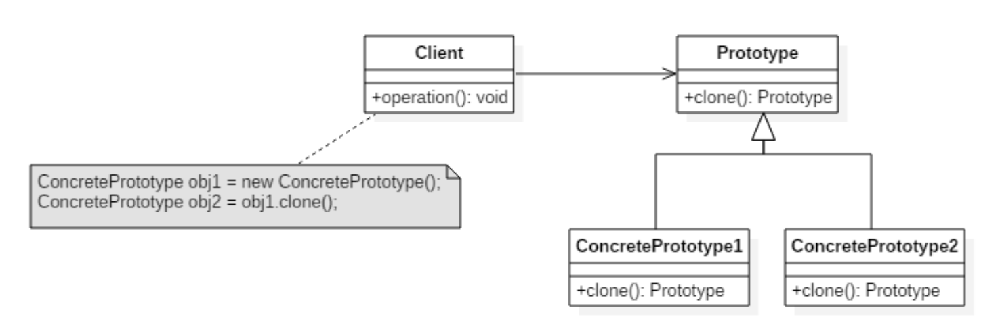

引言
创建型模式一般是用来创建一个新的对象，然后使用这个对象完成一些对象的操作，通过原型模式可以快速的创建一个对象而不需要提供专门的 new()操作就可以快速完成对象的创建，这无疑是一种非常有效的方式，快速的创建一个新的对象。
例子：下面是一个邮寄快递的场景：
“给我寄个快递。”顾客说。
“寄往什么地方？寄给……？”你问。
“和上次差不多一样，只是邮寄给另外一个地址，这里是邮寄地址……”顾客一边说一边把写有邮寄地址的纸条给你。
“好！”你愉快地答应，因为你保存了用户的以前邮寄信息，只要复制这些数据，然后通过简单的修改就可以快速地创建新的快递数据了。
定义
通过复制（克隆、拷贝）一个指定类型的对象来创建更多同类型的对象。这个指定的对象可被称为“原型”对象，也就是通过复制原型对象来得到更多同类型的对象。即原型设计模式。
结构

抽象原型（Prototype）角色
规定了具体原型对象必须实现的接口（如果要提供深拷贝，则必须具有实现 clone 的规定）
具体原型（ConcretePrototype）
从抽象原型派生而来，是客户程序使用的对象，即被复制的对象。此角色需要实现抽象原型角色所要求的接口。
实现
/**
* 抽象原型角色
*/
public interface Prototype {
Prototype clone();
}
/**
* 具体原型角色
*/
public class ConcretePrototype1 implements Prototype {
private String name;
public ConcretePrototype1(String name) {
this.name = name;
}
public Prototype clone() {
return new ConcretePrototype1(name);
}
public String toString(){
return "Now in Prototype1, the name is " + this.name;
}
}
/**
* 具体原型角色
*/
public class ConcretePrototype2 implements Prototype{
private String name;
public ConcretePrototype2(String name) {
this.name = name;
}
public Prototype clone() {
return new ConcretePrototype2(name);
}
public String toString(){
return "Now in Prototype2, the name is " + name;
}
}
public class PrototypeTest {
@Test
public void test() {
Prototype p1 = new ConcretePrototype1("aaa");
//获取原型来创建对象
Prototype clonedP1 = p1.clone();
System.out.println("clonedP1：" + clonedP1);
//有人动态的切换了实现
Prototype p2 = new ConcretePrototype2("bbb");
Prototype clonedP2 = p2.clone();
System.out.println("clonedP2：" + clonedP2);
}
}
## 结果
clonedP1：Now in Prototype1, the name is aaa
clonedP2：Now in Prototype2, the name is bbb
总结
优点
- 运行时刻增加和删除产品：Prototype 允许只通过客户注册原型实例就可以将一个新的具体产品类并入系统。它比其他创建型模式更为灵活，因为客户可以在运行时刻建立和删除原型。
- 改变值以指定新对象：高度动态的系统允许你通过对象复合定义新的行为，例如，通过为一个对象变量指定值—并且不定义新的类。你通过实例化已有类并且将这些实例注册为客户对象的原型，就可以有效定义新类别的对象。客户可以将职责代理给原型，从而表现出新的行为。这种设计使得用户无需编程即可定义新“类”。实际上，克隆一个原型类似于实例化一个类。Prototype 模式可以极大的减少系统所需要的类的数目。
- 改变结构以指定新对象：许多应用由部件和子部件来创建对象。
- 减少子类的构造 FactoryMethod 经常产生一个与产品类层次平行的 Creator 类层次。Prototype 模式使得你克隆一个原型而不是请求一个工厂方法去产生一个新的对象。因此你根本不需要 Creator 类层次。这一优点主要适用于像 C++这样不将类作为一级类对象的语言。像 Smalltalk 和 ObjectiveC 这样的语言从中获益较少，因为你总是可以用一个类对象作为生成者。在这些语言中，类对象已经起到原型一样的作用了。
- 用类动态配置应用一些运行时刻环境允许你动态将类装载到应用中。在像 C++这样的语言中，Prototype 模式是利用这种功能的关键。一个希望创建动态载入类的实例的应用不能静态引用类的构造器。而应该由运行环境在载入时自动创建每个类的实例，并用原型管理器来注册这个实例（参见实现一节）。这样应用就可以向原型管理器请求新装载的类的实例，这些类原本并没有和程序相连接。ET++应用框架[WGM88]有一个运行系统就是使用这一方案的。
Prototype 的主要缺陷是每一个 Prototype 的子类都必须实现 clone 操作。例如，当所考虑的类已经存在时就难以新增 clone 操作。当内部包括一些不支持拷贝或有循环引用的对象时，实现克隆可能也会很困难的。
扩展
浅拷贝
被拷贝对象的所有变量都含有与原对象相同的值，而且对其他对象的引用仍然是指向原来的对象。即浅拷贝只负责当前对象实例，对引用的对象不做拷贝。
深拷贝
被拷贝对象的所有的变量都含有与原来对象相同的值，除了那些引用其他对象的变量。那些引用其他对象的变量将指向一个被拷贝的新对象，而不再是原有那些被引用对象。即深拷贝把要拷贝的对象所引用的对象也都拷贝了一次，而这种对被引用到的对象拷贝叫做间接拷贝。